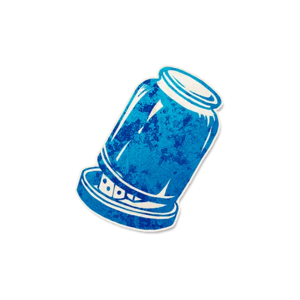

背景故事
"开！"
角色能力
信源
Each night*, learn the character that nominated you today. If you are "mad" about being the hustler, you receive false info.
每个夜晚*，你得知今天提名你的角色。如果你“疯狂”地证明你是投机者，你得知错误信息。
角色简介
投机者可以得知自己“投资人”的角色，但是前提是隐藏好自己投资者的本质。
- 投机者会得知当天提名他玩家的角色。
- 无论是投机者通过私聊、暗示等各种方式试图证明自己是投机者，都应当被判定为“疯狂”。
- 投机者一旦被判定为“疯狂”证明自己是投机者，即使之后不再对自己是“投机者”疯狂，依然无法获得正确信息。
- 即使投机者在白天被提名时不具有能力（甚至他当时可以不是投机者），他只要在夜晚时拥有能力，仍然可以得知提名自己的玩家的角色。
范例
运作方式
在有玩家提名投机者之后，在其玩家标记旁放置“投资”提示标记，即使他中毒或者醉酒。
如果投机者“疯狂”证明自己是投机者，在其角色标记旁放置“疯狂”提示标记。
在夜晚时，唤醒投机者，给他展示放置“投资”提示标记旁的玩家的角色标记。如果投机者的角色标记旁放置有“疯狂”角色标记，改为展示另一个角色标记。
规则细节
- 在投机者疯狂证明自己是投机者之后，他将不再会获得正确信息，除非他中毒醉酒。即使他在下一个白天不再对自己是投机者“疯狂”。
- 可能会有多名玩家在同一个白天提名投机者（屠夫），由说书人选择展示其中一个提名玩家的角色标记。
- 如果投机者白天没有被提名，那么他不会被唤醒。
提示标记
- 投资
放置时机：有玩家提名投机者之后。
移除时机：黎明。
- 疯狂
放置时机：白天投机者疯狂证明自己是投机者之后。
移除时机：投机者离场。
与特定角色互动
涡流：无论投机者是否疯狂，他只能获得错误信息。
哲学家/小精灵/学徒/食人族：玩家可能会声称自己是通过上述角色获得了投机者的能力，说书人应当延伸“疯狂”的判定标准，在玩家疯狂证明自己拥有投机者的能力时放置“疯狂”提示标记，让其获得错误信息。
相克规则
无
Json字段
{
"image": "https://oss.gstonegames.com/data_file/clocktower/upload/202412/c_5141009874371_9c1a0480.jpg",
"name": "投机者",
"team": "townsfolk",
"ability": "每个夜晚*，你得知今天提名你的角色。如果你“疯狂”地证明你是投机者，你得知错误信息。",
"id": "hustler",
"edition": "custom",
"firstNightReminder": "",
"otherNightReminder": "在夜晚时，唤醒投机者，给他展示放置“投资”提示标记旁的玩家的角色标记。如果投机者的角色标记旁放置有“疯狂”角色标记，改为展示另一个角色标记。",
"setup": false,
"reminders": ["投资","疯狂"],
"remindersGlobal": [],
"firstNight": 0,
"otherNight": 11401
}

图标画师
Lei.
角色能力类型
获取信息 提名 能力效果干扰 回溯性能力（主观回溯）